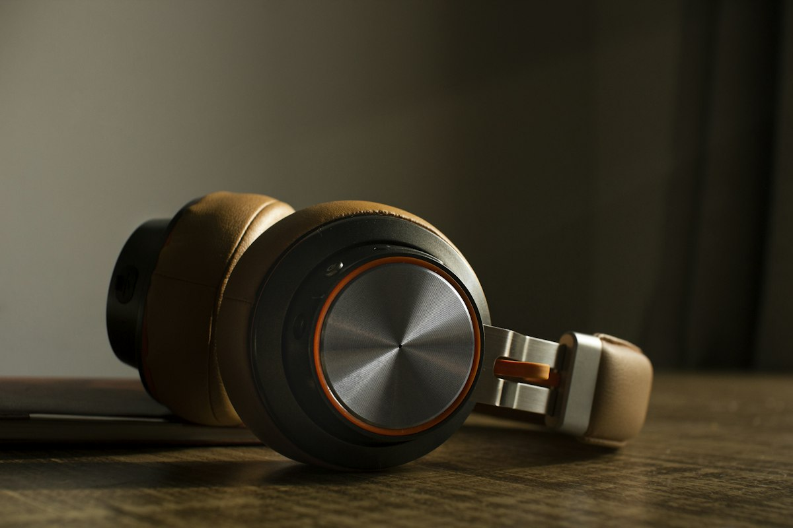

Masanıza profesyonel stüdyo kalitesi.
Cebinizdeki kamerayla.
Akıllı telefonunuzun gelişmiş kamera donanımını sıfır gecikmeyle bilgisayarınıza bağlayın. 4K kristal netlik, doğal optik derinlik, stüdyo mikrofonu ve gerçek zamanlı renk kontrolü. Sıfır bulut, %100 yerel ve özel.
Gerçek Zamanlı Stüdyo Vizörü.
Görüntülü toplantılarda ve canlı yayınlarda kameranızın sensörünü doğrudan kontrol edin. Renk sıcaklığı, ton ve keskinlik ayarlarını anlık deneyimleyin.
RAW RENK & IŞIK AYARLARI
Klasik bir web kamerası ile
AselCam arasındaki uçurum.
Aşağıdaki çubuğu sağa sola kaydırarak standart bir web kamerasının çamurlu görüntüsü ile telefonunuzun sunduğu 4K sinematik derinliği canlı karşılaştırın.
Görüntünüz yalnızca size aittir.
Sıfır bulut. %100 yerel iletişim.
Verileriniz asla harici sunuculardan geçmez. AselCam, tüm ses ve görüntü akışını yalnızca kapalı devre yerel ağınızda işler.
Kapalı Devre Yerel İletişim
Telefonunuz ile bilgisayarınız arasındaki tüm video ve ses akışı, sadece doğrudan USB kablonuz veya yerel Wi-Fi ağınız üzerinden doğrudan aktarılır. Sıfır sunucu, sıfır bulut bağımlılığı.
Sıfır Telemetri & Veri
Hiçbir izleyici, analitik kütüphanesi veya veri toplama kodu barındırmaz. Ne izlediğinizi ve ne konuştuğunuzu asla bilemeyiz.
Hesap veya Kayıt Yok
Uygulamayı indirin ve hemen kullanın. E-posta, şifre, abonelik veya kullanıcı profili oluşturmanız gerekmez.
Açık Kaynak & Şeffaf
Tüm kod tabanı GitHub üzerinde herkese açıktır. Ağ soketlerinden kamera işleme mantığına kadar her satırı bağımsız inceleyebilirsiniz.
Devasa bir sensör.
Doğal alan derinliği.
Geleneksel web kameraları 1/4 inç boyutunda küçücük sensörlere sıkışmıştır ve az ışıkta pikselli, çamurlu görüntüler üretir. Akıllı telefonunuzun devasa ana sensörü ise stüdyo ışığınızı mükemmel toplar, arka planı yapay filtrelere gerek kalmadan doğal bir şekilde yumuşatır.

Ayrı bir mikrofona gerek kalmadan.
Kristal netliğinde ses.
Telefonunuzun gelişmiş çoklu mikrofon donanımı, ortam gürültüsünü filtreler ve sesinizi 24 kHz yüksek çözünürlükle bilgisayarınıza doğrudan bir stüdyo mikrofonu olarak aktarır. Toplantılarda ve yayınlarda sesiniz her zaman berrak duyulur.

Isınmadan saatlerce yayın.
Çift katmanlı karartma.
Yayın sırasında telefon ekranını tamamen karartarak panel enerjisini sıfıra indirir. Telefonunuz saatlerce süren yayınlarda dahi ısınmaz, pilini korur ve stüdyonuzda dikkat dağıtıcı parlama yapmaz.

Tüm cihazlarınız için hazır.
GitHub Releases üzerinden doğrudan indirilebilir, dijital imzalı resmi v1.4.7 sürüm paketleri.
macOS
1.4 MB • v1.4.7Apple Silicon (M1/M2/M3/M4) ve Intel Mac'ler için evrensel uygulama paketi.
Windows
98 MB • v1.4.7Windows 10 ve 11 (64-bit) için taşınabilir sürüm ve sistem tepsisi entegrasyonu.
Linux
Open SourceArch, Ubuntu, Fedora ve Debian için optimize edilmiş bağımsız paket.